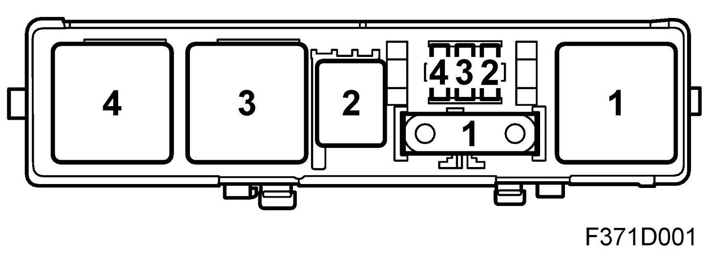
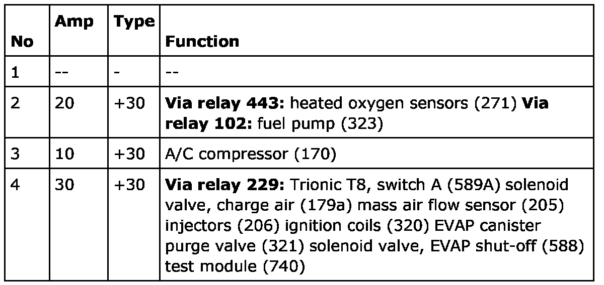
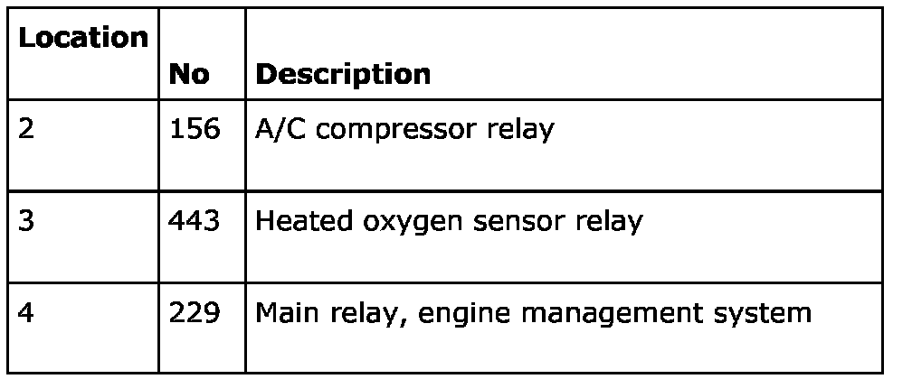

Electrical Centre, Trionic T8, 727 In The Engine Bay
Electrical Centre, Trionic T8, 727 In The Engine Bay

Location
The electrical centre in front of the battery
Main task
Main fuse box for the Trionic T8 engine management system except for fuel pump relay 102, which is located in the cabin under the right-hand A-pillar.
Type
Electrical centre with relays, maxi and micro-fuses.
Connect
The electrical centre is integrated into the engine harness.
Power supply, electrical centre Trionic T8
Fuses

Relays
